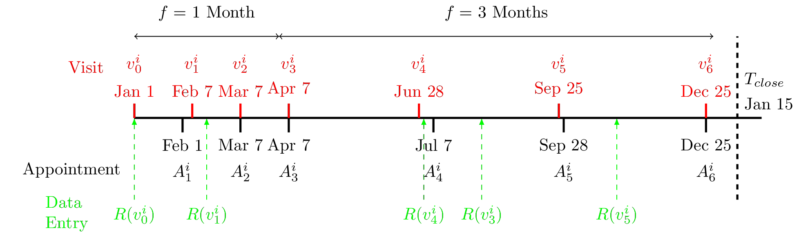

Bottom-up approaches to HMIS analysis
Dissertation Proposal
May 2017
Problems in HMIS
Health sector reforms also magnify the need for standardization and quality of information, presenting a further challenge to national health authorities. Data are often collected without being analysed critically or turned into information that can be used for day-to-day management or longer-term planning. Meanwhile, health workers are overburdened by excessive data and reporting demands from multiple and poorly coordinated subsystems.
Health Metrics Network, 2008
Problems in HMIS
Health sector reforms also magnify the need for standardization and quality of information, presenting a further challenge to national health authorities.
Data are often collected without being analysed critically or turned into information that can be used for day-to-day management or longer-term planning. Meanwhile, health workers are overburdened by
excessive data and reporting demands from multiple and poorly coordinated subsystems.
Health Metrics Network, 2008
 Health Information remains locked in the collection of data conventionally demanded, yet seldom properly used, by those responsible for the health services
Emmanuel de Kadt, 1989
Health Information remains locked in the collection of data conventionally demanded, yet seldom properly used, by those responsible for the health services
Emmanuel de Kadt, 1989
Problems in HMIS
Health sector reforms also magnify the need for standardization and quality of information, presenting a further challenge to national health authorities.
Data are often collected without being analysed critically or turned into information that can be used for day-to-day management or longer-term planning. Meanwhile, health workers are overburdened by
excessive data and reporting demands from multiple and poorly coordinated subsystems.
Health Metrics Network, 2008
 It is a human frailty to which statisticians are eminently liable, to look upon means as ends. They learn to take keen pleasure in the mere accumulation of neatly tabulated figures, carefully added and averaged, qui irrespectively of any use to which those figures can be applied.
Francis Galton, 1891
It is a human frailty to which statisticians are eminently liable, to look upon means as ends. They learn to take keen pleasure in the mere accumulation of neatly tabulated figures, carefully added and averaged, qui irrespectively of any use to which those figures can be applied.
Francis Galton, 1891
Problems in HMIS
Health sector reforms also magnify the need for standardization and quality of information, presenting a further challenge to national health authorities. Data are often collected without being analysed critically or turned into information that can be used for day-to-day management or longer-term planning. Meanwhile, health workers are overburdened by excessive data and reporting demands from multiple and poorly coordinated subsystems.
Health Metrics Network, 2008
 These documents, gathered without method, drowned in massive publications and published without regularity are incomplete and filled with mistakes and erroneous calculations (…) that are tiring even for the most number oriented mind.
René Ricoux, 1880
These documents, gathered without method, drowned in massive publications and published without regularity are incomplete and filled with mistakes and erroneous calculations (…) that are tiring even for the most number oriented mind.
René Ricoux, 1880
Problems in HMIS
Health sector reforms also magnify the need for standardization and quality of information, presenting a further challenge to national health authorities. Data are often collected without being analysed critically or turned into information that can be used for day-to-day management or longer-term planning. Meanwhile, health workers are overburdened by excessive data and reporting demands from multiple and poorly coordinated subsystems.
Health Metrics Network, 2008
 For every purpose for which a Revenue Officer can desire a map, those already furnished by the late survey (…) seem to me amply sufficient and if anything more accurate or detailed be required, it must be, I conclude for some purpose of speculative science, on the necessity or otherwise of which I am not required to express and opinion.
John Vibart, 1841
For every purpose for which a Revenue Officer can desire a map, those already furnished by the late survey (…) seem to me amply sufficient and if anything more accurate or detailed be required, it must be, I conclude for some purpose of speculative science, on the necessity or otherwise of which I am not required to express and opinion.
John Vibart, 1841
Problems in HMIS
Health sector reforms also magnify the need for standardization and quality of information, presenting a further challenge to national health authorities. Data are often collected without being analysed critically or turned into information that can be used for day-to-day management or longer-term planning. Meanwhile, health workers are overburdened by excessive data and reporting demands from multiple and poorly coordinated subsystems.
Health Metrics Network, 2008
 This register (…) will be completed by a set of cards that will ease the searches, as well as statistics on hospitalized population (…) which provides such interesting elements for information and studies. To help the usage of this register, the High Council asked for it to be standardized and simplified.
Ministère de l’Intérieur et des Cultes, 1899
This register (…) will be completed by a set of cards that will ease the searches, as well as statistics on hospitalized population (…) which provides such interesting elements for information and studies. To help the usage of this register, the High Council asked for it to be standardized and simplified.
Ministère de l’Intérieur et des Cultes, 1899
Improving HIS Processes
Develop "bottom-up approaches" for HIS in developing countries :- Using existing local data
- Geared towards local use of information
Improving HIS Processes
- Indicators definition
- Local adaptation of measurement categories
- Flexible standard for locally optimized category definitions
- Data Collection
- Hybridization of heterogeneous data sources
- Actionable map of population for public health actors
- Data Analysis
- Using data verification trail
- Orient supervision of health system
Aim 1 : Flexible standards
Defining Loss to Follow Up
The Life of an Indicator - LTFU Rate
Development of a statistical measure
- Concept definition
- Methods definition
- Description and explanation
LTFU litterature evolution

"However, performing large studies in developin areas is challenging. One major problem is that many mothers and their infants are lost to follow-up."
LTFU litterature evolution

"However, little has been reported about patients who do not adhere to care, fail to attend their scheduled consultations, or are lost to follow-up. In most studies of patients on antiviral therapy only those lost to follow-up in clinical trials were considered."
LTFU litterature evolution

"However, accurate estimates of patient survival and other clinical outcomes have been difficult to obtain, as they are significantly impacted by patient loss to follow-up."
LTFU litterature evolution

"Loss to follow-up is an important problem both for the care of individual patients and the evaluation of antiretroviral treatment programmes in low- and middle-income countries."
LTFU litterature evolution

"However, the degree to which different measures of retention are related to outcomes, and to one another, among the same sample of HIV-infected patients is largely unexplored."
LTFU litterature evolution

"Our recommendations for LTF definition are to base the definition on the study/programmatic outcome of interest, available encounter data, and the cohort visit schedule. Except in the context of collaborative networks,we do not advocate a universal standard as the definition of LTF should depend on the intended application and the cohort(s) of study."
The Life of an Indicator - LTFU Rate
Development of a statistical measure
- Concept definition
- Methods definition
- Description and explanation
LTFU litterature evolution
- Description and Explanation of LTFU rates
- Correction Methods for mortality and LTFU
- Concept redefinition
Impact of LTFU definition and Database Maturity

Aim 2 : Data Hybridization
What data for what objective
Top-down approach
- Data : Macro-covariates rasters
- Query : By lat/long
- Usage : Descriptive, easy to reuse
Bottom-up Approach
- Data : Local datasets
- Query : By locality names
- Usage : Planning, logistics
Local Datasets ?
Census
Voters List
OSM
Expected Result
Methods
- Name Matching : In collaboration with Fahad Pervaiz (CSE)
- Combination of different string matching heuristics
- Valiation with Niger OSM community
- Locality Grid Validation : Iterative Validation
- Population Modeling : Finding the right level of agregation for meaningful modeling
Aim 3 : Data Monitoring
Open Results Based Funding in Bénin
- Facilities report monthly on contracted activities
- Data is validated by District officers
- Payment is made based on validated data
Data
Research question
How to optimize supervision strategy to lower the costs and keep data quality and service quality in check ?Data Monitoring Questions
- How to best screen data quality from routine reports ?
- How to best screen service quality from primary health services based on quantitative information ?
- What is the optimal amount of supervision we should be making to answer two needs :
- Global cost reduction
- Out of Control situations diagnostic
What is in an algorithm ?
- A descriptive statistic regarding the distribution of collected indicators
- A decision rule to consider the data normal or pathological
- An implementation strategy to determine when to supervise facilities
Available Methods
- Syndromic surveillance ?
- Error of predicted value
- Health System regulation / benchmarking
- Inference on posterior distribution of random effects
- Industrial Statistical Process Control / Profile Monitoring
- Monitoring of relationship between indicators
Methods
- Fit and calibrate different monitoring models + mixtures
- Simulate supervision trails in time with implementation strategies
- Design tool for selection of preferred trade-off realisation and corresponding algorithm
Description of observed data

First algorithms

Trade offs